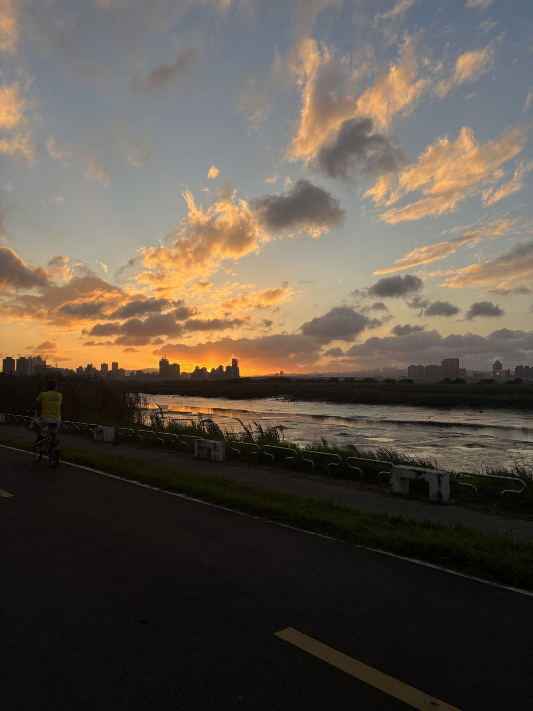

Active Taipei
With all the cheap food it is good to keep moving. Here is how I stay active and how I get around the city.

Running in Riverside Park
Along the river there are long, flat paths that are great for running. I go in the early evening when it is a bit cooler and the sun sets over the water.
The skatepark
In the same park there is a free outdoor skatepark where I skate often. The local skaters are friendly, even if we don't speak the same language.
Getting around: YouBike, MRT and Google Maps
YouBike is the city's shared bike system. You unlock a bike with your EasyCard and the first 30 minutes are very cheap. For longer trips I take the Taipei Metro (MRT), and I use Google Maps to plan everything. It shows MRT and bus times very accurately.
My tips
- Get an EasyCard on your first day. It works for MRT, bus, YouBike and 7-Eleven.
- Run or skate in the early morning or evening, the afternoon heat is intense.
- Always bring water. You can refill it at most MRT stations.
- Check the YouBike app to see which stations still have bikes or free spots.
- In Google Maps, choose "Transit" to see MRT and bus routes.
- Watch out for scooters, they come from everywhere!